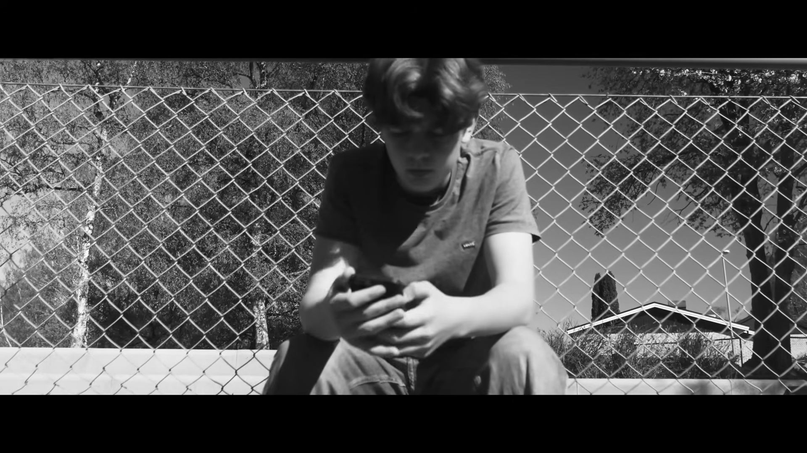
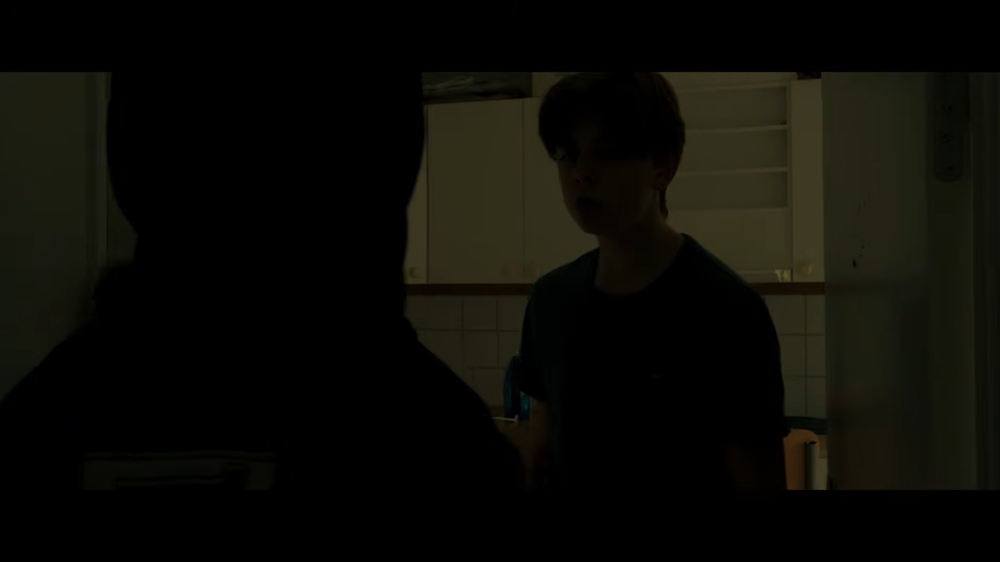
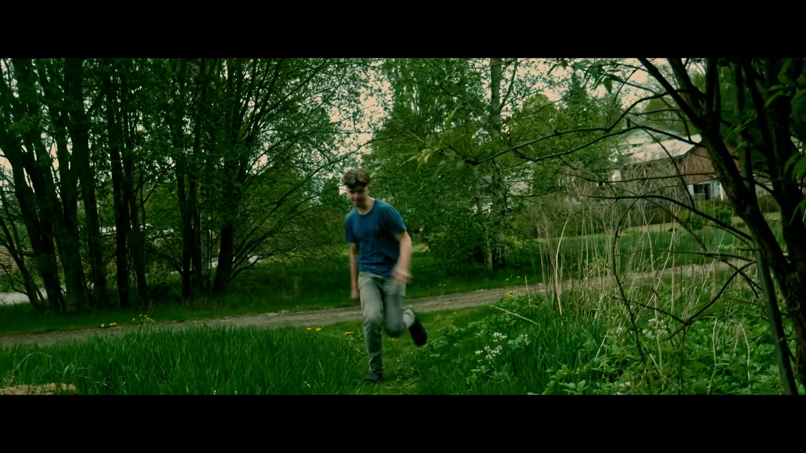
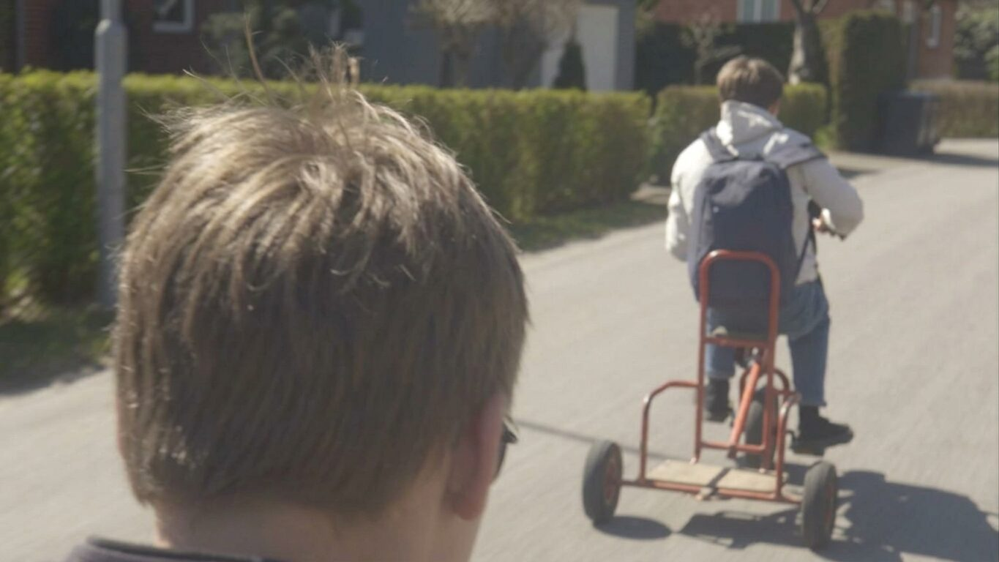
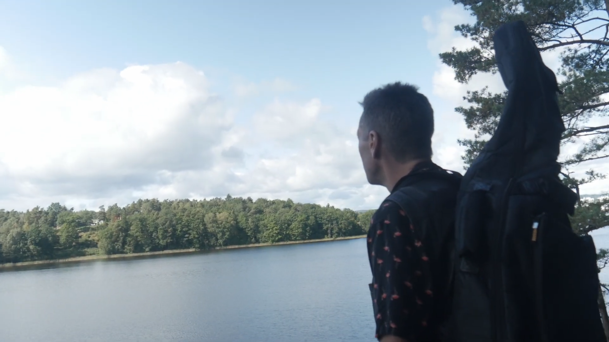

Spelutveckling
MAYDAY
Ett spel där man flyger en ambulans-drönare genom en futuristisk stad och räddar patienter.
Släpps ???
Spelutveckling
Ett spel där man flyger en ambulans-drönare genom en futuristisk stad och räddar patienter.
Släpps ???
Kortfilm
Två filmer på 5 och 11 minuter om en pojke som planerar och utför rån.
Se filmerna på YouTube →




Noomaraton 2026
Vårt bidrag till Noomaraton 2026 i Västra Götaland. Handlar om en man som köper en mystisk dricka som transformerar han till en kaos-sökande tiger.
Se filmen →
Noomaraton 2025
Vårt bidrag till Noomaraton 2025 i Västra Götaland. Handlar om en man som hittar en pipleksak som leder han till frihet.
Se filmen →Musik
Artistnamn för musik av Bob Jäderberg själv. Inkluderar låtar från filmer, spel samt andra låtar.
Nyfiken på vad vi filmar och spelar in med?
Se utrustningen